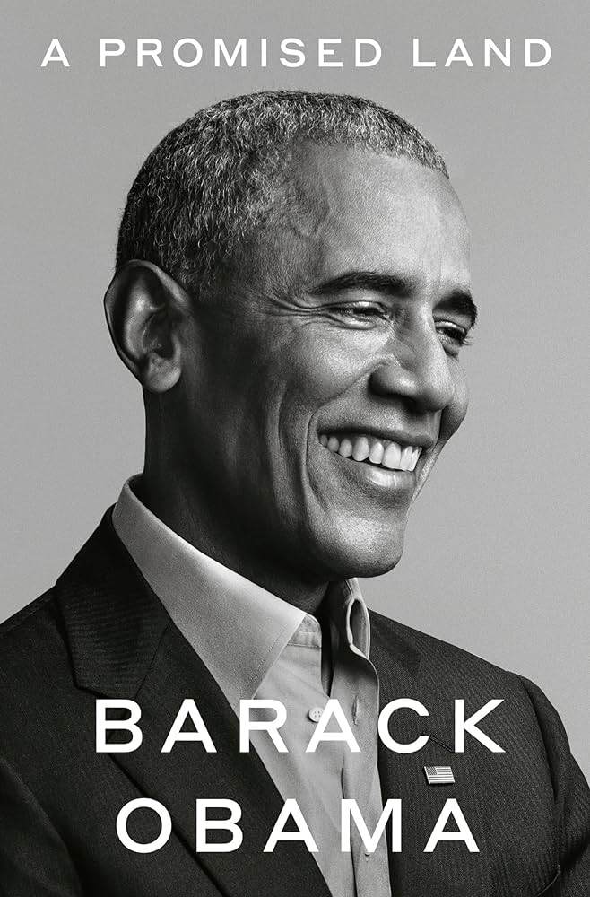

This writing was initially done for a project for my English class, where we had to capture a “snapshot” of a famous figure in the past or present, or an event that was significant to the person in some way. I chose Barack Obama. The first step was to read an autobiography of the person, so I took a month or so to read Obama’s book “A Promised Land”, which details his processes and personal thoughts of being Senator to eventually having to run for President. But, when I was writing, the criteria was to in fact write it from the viewpoint of someone close to the person at the time. We could choose from several different formats for creative writing, such as a story or a letter. I chose the letter. It made sense to write from the perspective of Michelle Obama, as she was very closely involved with Obama’s Presidential campaign. I addressed some letters I wrote in her perspective to her mother, Marian Robinson. Michelle Obama was initially skeptical of her husband’s plan to run for President, and I did the best I could to illustrate these feelings in her letter. She did give him her full support, however, which was no doubt a big factor into Obama’s victory. This project gave me more insight into the life of the President at the time when I was born, Barack Obama.
Letter to Marian Robinson From Michelle Obama 02/02/2007 Dear Mom, I am writing in the hope that you might be able to provide some advice in my current situation. Barack has just informed me of his intention to run for president in the upcoming 2008 election. He wishes to announce his candidacy soon, and I am strongly against this, because I already had to spend so much time away from him when he was running for Senator. He has to make so many important decisions in the Senate, I wonder why he wants even more power over the country itself. It would make sense to influence the change that he wants inside of his Senate position, not aiming for a higher position that he is most likely to lose. I know that a lot of other Democrats can give the same amount as Barack can. But why does he need to be President? He said, “That I might be able to spark a new kind of politics, or get a new generation to participate, or bridge the divisions, in the country that other candidates would. I know that the day I raise my right hand and take the oath to be president of the United States, the world will start looking at America differently.” (Obama 77). We aren’t exactly sure what the public opinion about him is all the time, so we don’t get a true yes/no response from them, and we don’t know if he will even win the primary to even become a candidate in the first place. It also costs us a lot of money to run, and if we lost even the primary, we would be left with a ton of costs stacking up from the campaign. Already with his Senate duties, Barack is constantly away from the family, and we need him here to provide support and love. Not to mention, it would mean more work for me as well if I had to become First Lady. Much more would be expected out of me, and I’m not too sure I can take that kind of workload yet. Also, my daughters, Malia and Sasha, would gain much more publicity as it is, and I don’t know if that is the kind of thing they want. I feel like it would be much more normal to raise them in a quiet, natural environment. Being the daughter of a President can be a heavy duty in itself and warrant attention from people, both good and bad. I understand his motivations, and Barack keeps telling me that it is his dream, and I acknowledge that. However, I am trying to tell him how much it would drain our resources and relationship with the duties, money, and campaign that comes with running for President. He says that we need “hope and change”, and that being the first African American president would be a great honor that he can use to implement many policy changes that would make life better for so many Americans. I agree, but many people still hold racist and segregationist values, and I wonder if any harm could come to Barack because of this. Not many Americans would be very enthusiastic about a Black president running their country, especially one born in Hawaii. I don’t want my husband to be the brunt of so much hate from other candidates. If he wins, he will also have people vehemently opposing him, and he might even be at risk of death because of how much power he has. I can only try to support him from the sidelines for now, and speak when I need to, but my duties right now are my job and taking care of Malia and Sasha. I don’t want them to be exposed to the press because that could very well ruin their lives, and I can’t help but feel that Barack’s campaign has just brought a whole new level of risk into our lives that just wasn’t there previously. I know what he wants, and I know what I want, although I don’t really want him to run for President because it would drain us both. I want to know what you think. Please reply to this letter when you can. Much love, Michelle
Letter to Marian Robinson From Michelle Obama 08/20/2007 Dear Mom, Barack is running for presidential candidacy. I was initially against it, but he’s persuaded me that it could be worth it, despite the money that we could lose in the process. I am very proud of him, but still regret his decision to an extent. I will continue to stay supportive as he takes more steps into the world of politics. At the start, his campaign was met with criticism, but he seems to be catering to a majority of young voters who want change that matters. He does lack experience, making him look worse in his handling of various issues in the campaign, but I know that my husband absolutely has the capability to handle issues like these. But, I’m still not sure how he plans to convince the public of that! Now that the democratic nomination is over, my husband has to focus his attention on swing or undecided voters to gain an edge. He tells me that he’s shifted his campaign to advertising grassroots origins, hope and change, and hard work. He’s detailed his life growing up to be more personable with audiences, which I like. “Obama excelled at his studies and made a diverse group of friends in the ethnic melting pot of Hawaii. But he sometimes struggled to define his racial identity as a Black child being raised by his white mother and grandparents. ” (Obama, Barack). Some people might detest this, that he has such a diverse background because they want traditional values.. But what I feel is that people also need to accept and embrace that Barack wants to create a new America for everybody, not just those who aren’t directly from the U.S, and that his policy of hope and change will change stale things about the current administration and revitalize America. He grew up in Hawaii with his mother and grandparents, but lived in Indonesia for some time, which I worry that people will try to call him out as not American because of this. This has been a major talking point for the other candidates such as John McCain. I absolutely hate that man! He’s always trying to portray my husband as not a true American, or that he’s too soft and unable to make decisions, when in reality, McCain himself is very old and if he gets elected, he will be the oldest President in office currently! This is very ironic, as Barack is still relatively young in terms of politics and wants to emphasize change, but McCain still chooses to hang onto the old, decrepit policies of the Bush administration. And his vice president-elect’s supporters are being blatantly wrong and showing extreme hatred toward Barack! They’re saying things that I simply cannot bear to hear. “The media reported shouts of ‘Terrorist!’and ‘Kill him!’ and ‘Off with his head’ coming from audiences”” (Obama 195). I cannot bear to hear people talk about him like this, but I have to acknowledge that our lives are like this and we are still going to receive this kind of hatred as long as we are involved in politics.I simply have to acknowledge that our lives are going to be changed forever, whether or not Barack wins. I will continue to support my husband, and I think he does in fact have a good chance of winning because nobody likes the President Bush, and McCain is advertising similar topics and stances that align with Bush’s, not seeing that Bush’s policies and overall public opinion is at an all-time low. As long as my husband doesn’t mess up or make any mistakes in his speeches, he can play on being young and advocating for change so that he can appeal to the wider range of younger audiences that are done with the old George W. Bush regime but also interested in making things better for good. I just pray he gets elected because then we can make policies that will help the lives of people just like ourselves and forge on a path that will shape the future of the country. Not to mention, if he loses, we’ll be losing a lot of money. Please reply soon. Hope all is well. Much love, Michelle